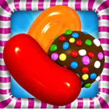

Candy Crush
Como Surgiu o Candy Crush?
Candy Crush Saga é um jogo de raciocínio lançado em 2012 pela empresa King, inicialmente para Facebook e depois liberado também para Android, iOS e Windows Phone. Em apenas um ano, o game se tornou o mais popular da rede social e o mais baixado nas lojas de aplicativos, com mais de 50 milhões de jogadores em todo o mundo.
É um jogo simples e fácil. Uma febre entre os internautas. Se você não está entre os que jogam, provavelmente já recebeu algum daqueles convites nas redes sociais para participar do Candy Crush. O que você não sabe é que esse jogo é capaz de movimentar nosso cérebro de uma forma que quase ninguém imagina. Para quem nem faz ideia do que se trata, o Candy Crush é um jogo de raciocínio, disponível no Facebook, no Android e no IOS.
O objetivo é a combinação de guloseimas da mesma cor em um tabuleiro. Mais de 50 milhões de usuários no mundo brincam com o jogo. Alguns chegam a gastar dinheiro (de verdade) para conseguir passar pelas fases dele. O motivo para toda essa multidão ser fã do game? A psicologia explica. Os movimentos das peças no tabuleiro criam o sentimento de satisfação e felicidade, que dão sempre mais vontade de continuar jogando.